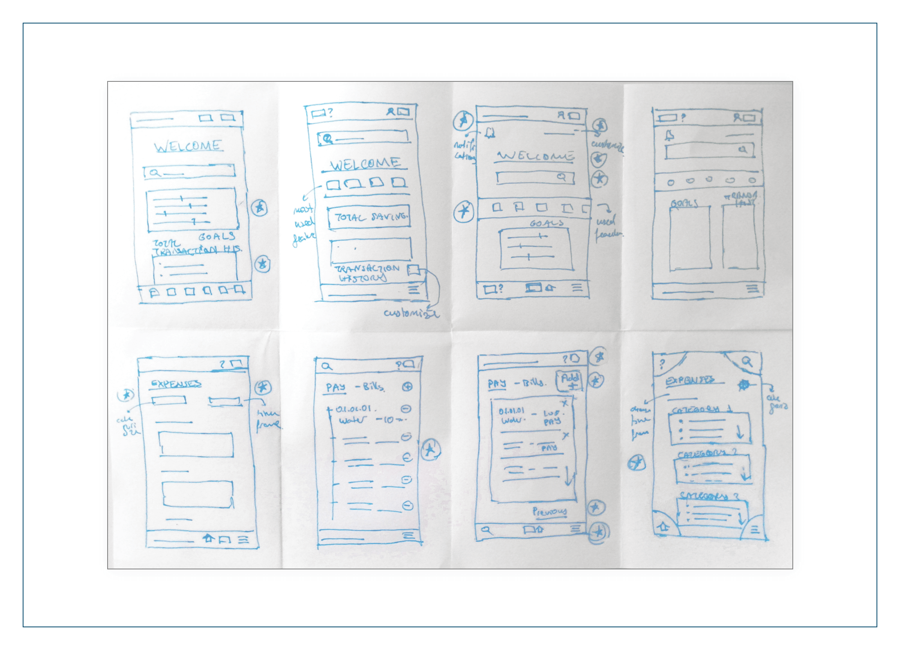
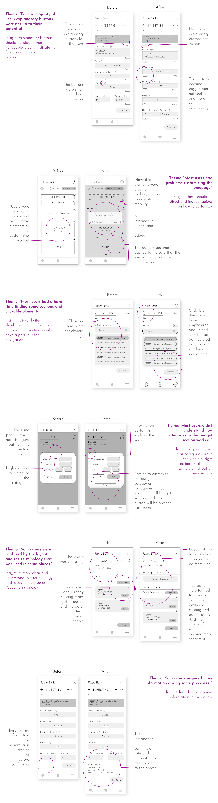

Future Bank is a conceptual banking app that focuses on being an easy to use app for general public. The bank wanted to bring out features that people use most, and be the app choice of ordinary people.
UX designer designing an app from conception to delivery.
Conducting research, paper and digital wireframing, low and high-fidelity prototyping, conducting usability studies, and iterating on designs.
April-May 2023
The percentage of customers that used the bank's app was lower than the desired amount. There were complaints that the app was too hard to use. Some customers even changed their banks just because the app of this bank was outdated.
Designing a new app that has all of the functions of a standart banking app while making the app accessible and pleasant to use for everyone.
I have spoken to people around me who prefers to use or not to use banking apps and interviewed them. I especially chose people whose banks have a similar concept as the Future Bank. For most people these apps were too complicated and intimidating.
Here are some of the questions I've asked during the interviews:
"Do you regulary use a banking app? Please explain why or why not."
"What features do you use more often or like more?"
"What feature would you like to see added, if any?"
"What are your complaints with your current banking app?"
People I have had conversations with had some common problems and goals. So I have fused their opinions into two different personas, summarizing all the input.
Here is the user journey map for Claire. She starts the journey in a fairly neutral mood and leaves the app in a bad mood therefore associating the app with bad feelings.
Then, I have looked into other banking apps with similar concepts as ours. I've gathered data and sorted them into two groups which are positive and negative qualities. I have also taken into consideration the comments about the apps in the AppStore.
Based on the information gathered by the research, some ideas have started to form such as what features that people mainly wanted, what to incorporate or stay away from or what can be done to solve some common problems. So, I have taken notes of these ideas started to work upon them.
The structure of the app is hierarchical. From the homepage, it has been divided into six branches of the main menu (accounts, payment, applications, investing, budget, profile) and 'search' and 'help' sections.
Here, user flows for both investing in stocks and setting a budget goal are shown. Investing flow is drawn in blue while budgeting flow is drawn in purple.
There were several features that I wanted to incorporate into the design or avoid while doing the crazy eights exercise. Some of them were: Customizable homepage, detailed and categorized expenses page, icons and explanatory buttons, simple design that is detailed enough, most used functions on the homepage, visible search bar, timetables, notification and scheduling options, etc.
Slowly, from the products of the ideation process, the app's outlines have started to form. To make the ideas and concepts morph into physical forms in the best way possible, I've tried many alternative designs starting from sketching.
I've combined the best features from the crazy eights exercise into complete sketches on paper. I believe using pen and paper while designing fuels creativity.
Then, I've turned those paper sketches into digital wireframes. I've also added more digital wireframes to the design so that there were enough wireframes to complete multiple userflows.Below, are some of the main wireframes of the design.
The final prototype before the usability study. Multiple wireframes were connected to make userflows and those userflows were connected to make one complete prototype.
The prototype visualizes some of the user flows in the following order:
- Logging in,
- Setting budget goals,
- Customizing the homepage,
- Checking expenses,
- Investing.
Next, it was time to test the low-fidelity prototype by doing a usability study. First, I decided upon how to conduct the usability study: how many people I was going to interview, where the interviews would take place etc. Then, I conducted the interviews and later made suitable changes to the wireframes based on the results.
I've done changes on the wireframes based on the outcome of the usability study. The themes and their insights were the main factors for the changes.
After the main flow and structure of the app had been established, it was time to start working on the visual aspects of the design. Colours, fonts, distances and everything else were decided during this phase to form the mockups. Later, the mockups were connected to create the high-fidelity prototype.
In the mockups, brand colours were used to support the continuity of the branding. White space was also heavily introduced, along with high contrast, to give the impression of a clear and simple space. Helvetica Neue is used as a professional but also a modern font.
The final, high-fidelity prototype. Here, you can see the transition between pages, how some of the features would work and understand the movement and flow of the app. It was done with smooth motions in mind.
The prototype visualizes some of the user flows in the following order:
- Logging in,
- Setting budget goals,
- Customizing the homepage,
- Checking expenses,
- Investing.
made by M. Dilara Özdemir
with love